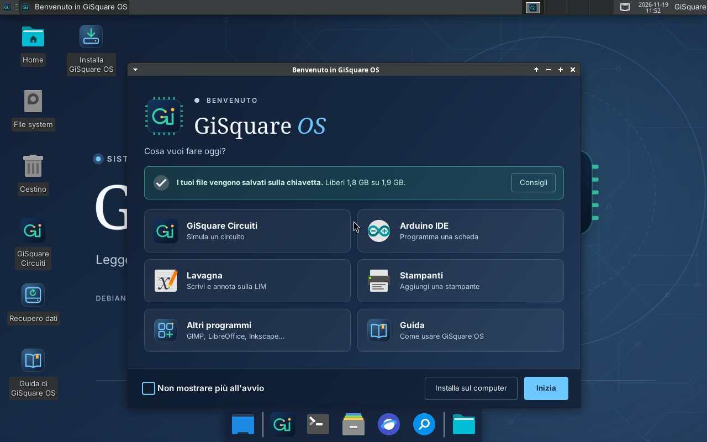
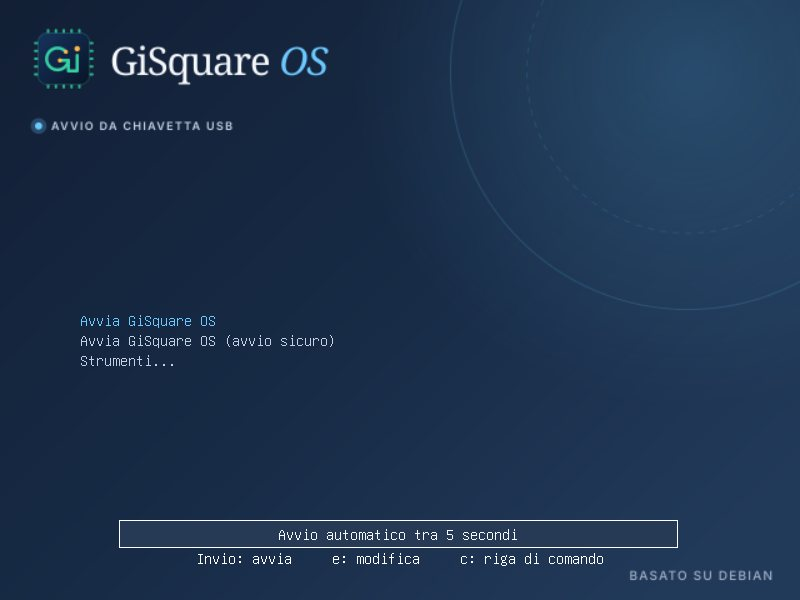
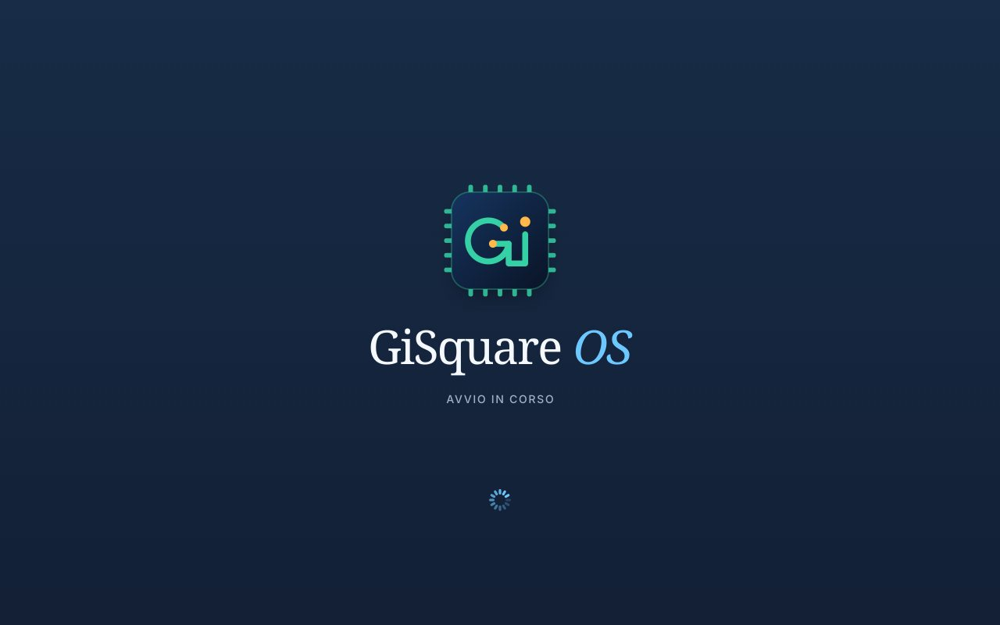
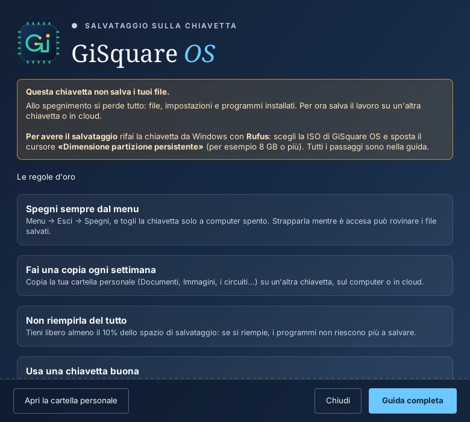
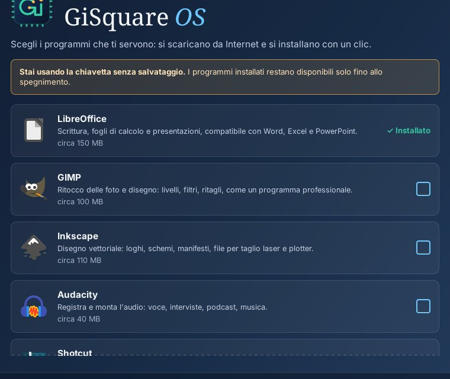

Il laboratorio
in una chiavetta.
GiSquare OS è un sistema operativo leggero, basato su Debian, con GiSquare Circuiti già installato. Parte da una chiavetta USB su quasi tutti i PC e conserva i tuoi file, oppure si installa sul computer. Arduino, Fritzing, la lavagna per la LIM e le stampanti sono già pronti.

Bastano 2 GB di RAM.
Accendi dalla chiavetta.
Il laboratorio è già pronto.
per partire
bastano
nessun account
Cosa trovi
al primo avvio.
Niente da configurare: i programmi per la scuola, per l’ufficio e per Internet sono pronti appena compare il desktop. Il resto si aggiunge con un clic.
Dal simulatore
al circuito vero.
Lo stesso computer accompagna tutto il percorso: si prova il circuito al sicuro, lo si monta sulla breadboard e lo si programma. Su qualsiasi PC della scuola, senza installare nulla.
Si simula con GiSquare Circuiti.
Misure, guasti, PLC e schede, senza rischi.
Si disegna il montaggio con Fritzing.
Dalla breadboard allo schema.
Si programma la scheda vera.
Arduino IDE e Thonny, con le porte USB già pronte.
 GISQUARE CIRCUITI · GIÀ INSTALLATO
GISQUARE CIRCUITI · GIÀ INSTALLATOUna chiavetta per studente.
Lo stesso laboratorio ovunque.
E PARTI ✳
La chiavetta che
salva i tuoi file.
Con Rufus, da un qualsiasi PC Windows, prepari una chiavetta che conserva documenti, impostazioni, reti Wi-Fi e programmi installati da un’accensione all’altra.
- 01
Scarica la ISO
Il file del sistema, dalla sezione Scarica di questa pagina. Controlla l’impronta SHA-256: deve coincidere con quella pubblicata.
- 02
Scrivila con Rufus
Chiavetta da almeno 16 GB, poi sposta il cursore «Dimensione partizione persistente»: è lo spazio per i tuoi file.
- 03
Avvia il PC
All’accensione premi il tasto del menu di avvio (F12, F9, F11, F8 o Esc) e scegli la chiavetta. Dopo un minuto sei al desktop.
| Dalla chiavetta | Installato sul computer | |
|---|---|---|
| Come si ottiene | Con Rufus, come sopra | Dalla chiavetta: «Installa GiSquare OS» |
| I tuoi file | Sulla chiavetta, nello spazio di salvataggio | Sul disco del computer |
| Dischi del computer | Protetti in sola lettura | Normali |
| Aggiornamenti | Si rifà la chiavetta con la versione nuova: un avviso dice quando | Automatici, anche quelli di GiSquare OS |
Semplice
da usare.
Un aspetto curato e tutto in italiano, dal menu di avvio alle finestre di GiSquare. Le immagini vengono dalla prova automatica di ogni versione.




Il tuo laboratorio
può partire oggi.
Scarica GiSquare OS e preparalo su una chiavetta in un quarto d’ora. È gratuito per studio, didattica e uso personale: per docenti, studenti, scuole e privati.
Scarica GiSquare OS sempre da questa pagina: è la versione ufficiale e verificata, con l’impronta SHA-256 per controllarla. Per farlo conoscere condividi il link a questa pagina.
Ti serve solo GiSquare Circuiti? Si installa anche su Windows, Mac e Linux: scaricalo dalla sua pagina ↗
Il tuo PC
- Processore a 64 bit, in pratica PC dal 2008 in poi
- 2 GB di RAM, consigliati 4 GB
- Chiavetta USB 3 da 16 GB o più
- Avvio da USB, BIOS o UEFI, anche con Secure Boot
Prima di
iniziare.
Le risposte alle domande più comuni. Le altre sono nella guida, che trovi anche dentro il sistema, sul desktop.
È davvero gratuito?
Sì, per studio, didattica e uso personale. Non serve nessun account e non ci sono pubblicità.
È open source?
Sì: GiSquare OS (script, grafica e configurazione) è software libero con licenza GNU GPL versione 3, e il codice è su GitHub ↗. Quasi tutti i programmi inclusi sono software libero di Debian. Fa eccezione GiSquare Circuiti, che è gratuito ma non open source: ha la sua licenza d’uso.
È sicuro?
La base è Debian 13, una delle distribuzioni Linux più solide: i programmi e gli aggiornamenti di sicurezza arrivano direttamente da Debian. Il firewall è attivo e il browser blocca pubblicità e tracciatori. Le parti GiSquare si aggiornano solo con pacchetti firmati.
Rovina il computer o Windows?
No. Dalla chiavetta i dischi del computer sono protetti in sola lettura: GiSquare OS non scrive nulla sul PC. Spegni, togli la chiavetta e il computer riparte come prima.
Come si aggiorna?
Installato sul computer si aggiorna da solo. Dalla chiavetta compare un avviso quando esce una versione nuova, con i passi per aggiornarla senza perdere i file. GiSquare Circuiti si aggiorna sempre da solo.
Posso installarlo accanto a Windows?
Sì: dalla chiavetta fai doppio clic su «Installa GiSquare OS» e scegli di installarlo accanto al sistema esistente. All’accensione scegli quale avviare.
Chi trova la mia chiavetta può leggere i file?
Sì: lo spazio di salvataggio non è protetto da password. Non tenerci dati riservati e fai una copia dei tuoi file ogni settimana.